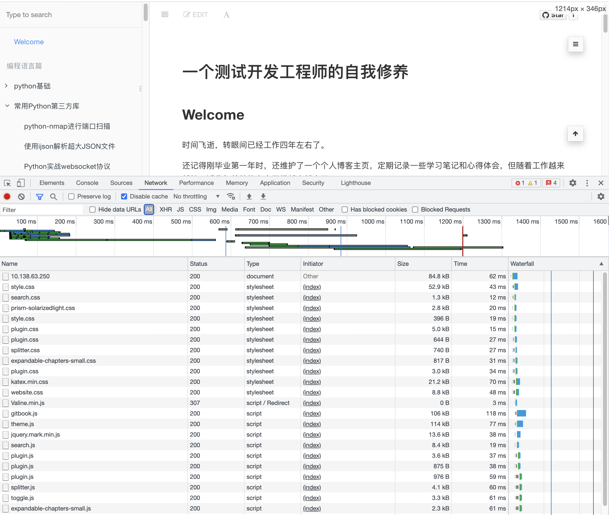
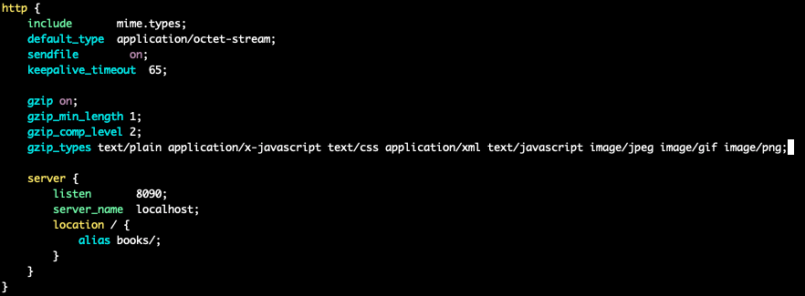
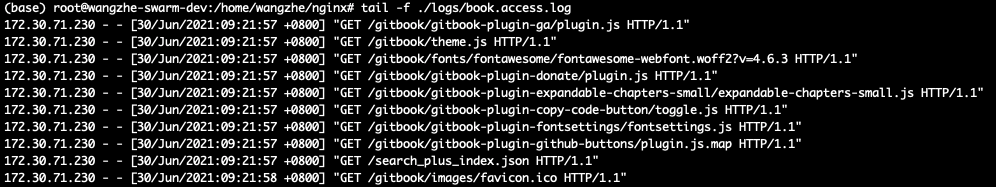
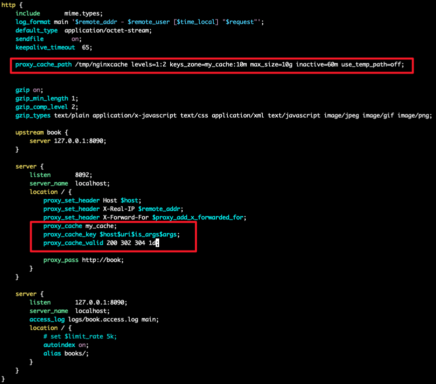
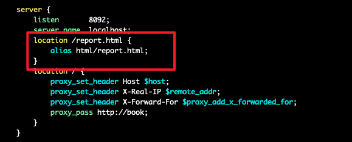

nginx的快速上手
在之前的文章中，我们已经讲解了一些 nginx 的基本概念并且安装了 nginx 的基础环境。
接下来，我们本文中，我们将会带着大家使用nginx完成一些基础的功能，简单的把nginx使用起来。
使用nginx搭建一个静态资源WEB服务器
基本服务启动
假设，我们在本机的 /home/wangzhe/nginx/books/ 目录下存在了一系列的静态资源，如index.html文件，jpg文件等。
下面，我们来看一下如何配置nginx，使得可以创建一个静态资源的WEB服务器。
首先，WEB服务器首先是属于http块内部的。
下面，我们来看一下http下的server块内容应该如何编写：

我们来解读一下上述配置文件：
- 首先，我们监听的端口设置为8080.
- 接下来，我们定义了一个 location 块，直接监听了所有访问 / 根目录的请求，同时，对于所有访问 / 根目录的请求，会将根目录转化为本地 books/ 目录下的文件，并对后缀进行匹配。
下面，我们来启动nginx看一下。

赞~现在我们的页面已经可以正常打开了。
gzip 压缩
打开network选项卡后，你可以发现我们发送请求查询静态资源时，得到的文件大小与真实的文件大小是一致的。
那么，我们有没有什么办法可以对传输的文件进行压缩呢？从而可以有效的节省我们的网络带宽。
对，是有的，就是 gzip 压缩。
下面，我们来继续修改 nginx 配置文件：

可以看到，我们在 http 块中加入了一些 gzip 相关的指令：
- 开启gzip压缩。
- 设置启用gzip压缩的最小文件大小为1字节。
- gzip的压缩级别为2。
- 同时也指定了哪些数据传输类型需要进行gzip压缩。
完成上述配置后，我们重新加载一下nginx的配置来看一下效果，可以看到，我们对于同一个文件，从之前的80多k降低到了13k。

autoindex
下面，我们来看一下如果我们希望将本地的目录结构对外暴露到WEB服务中，使得用的可以根据需要自主选择文件进行进行查询和下载。
在 nginx 中提供了一个 autoindex 的模块，参见文档 。
autoindex 的模块可以在我们访问 / 结尾的url时，可以显示该目录的结构信息。
使用方式也非常简单，只需要在 location 块中增加 autoindex on; 指令即可。
接下来，我们再次访问一个 books/ 目录下包含的一个目录，例如service/。

此时，我们就可以看到该目录下对应的目录结构了。用户也可以自己根据目录进行嵌套查询相关的内容。
请求限速
有时，当我们的nginx WEB服务器会被很多用户访问时，为了避免个别请求打满整个带宽，导致其他用户无法正常访问的情况出现，我们可能会需要对单个请求的访问速率进行限制。
此时，需要用到 set 命令配置一些特殊变量来实现相关的功能。

在上述命令中，我们设置了 limit_rate 变量的值为 5k，表示单个请求的最大下载速率为 5k/s。
关于 limit_rate 的文档，可以参考文档 。
规范日志打印格式
下面，我们来看一下如何设置nginx的日志打印格式。

我们在 http 块中通过 log_format 指令来定义了一个 main 名称的 access log 的日志打印格式。
可以看到，我们在日志格式中，引用了大量的nginx内置的特殊变量，例如remote_addr等。
接下来，我们在server块中通过access_log指定设置了对于该server块的access_log存储的位置以及使用的日志打印格式。

使用nginx搭建一个具备缓存的反向代理服务
启动一个反向代理服务器
除了搭建静态资源WEB服务器之外，Nginx 最常用的一个场景应该就是通过反向代理来实现负载均衡了。
在真实的业务场景中，业务服务由于存在着相对复杂的业务逻辑，单实例的QPS往往无法满足业务的需求，这时，我们就需要部署多个实例来分担用户请求。 同时，我们还希望可以提供给用户一个统一的请求入口，而不是每个实例单独提供入口，因此，这时，我们就需要一个反向代理服务器来进行流量的接入了。
下面，我们进行一个简单的示例演示。
我们还是使用上一部分中通过nginx搭建的静态资源服务器来作为业务服务器（上游服务），然后再通过nginx启动另外一个Server用于反向代理。
通常，上游服务器是禁止公网直接访问的，因此，我们可以修改一下之前nginx的配置，将server监听的端口从8080修改为127.0.0.1:8080，即表示该端口仅允许本机访问。
此时，为了使得配置生效，需要先将nginx停止再启动才能生效:
./sbin/nginx -s stop
./sbin/nginx
再次访问时，就会发现服务已经无法正常访问了。
下面，我们来修改配置文件，增加反向代理server：

在反向代理服务器的配置中，我们首先先设置了一个 upstream 块。
upstream 块其实就是用于包含上游业务服务器的地址，此处，我们指向了刚才的静态资源WEB服务器的地址。如果有多个上游服务器实例时，只需要在 upstream 块中包含多个server记录即可。
接下来，我们定义了反向代理服务器 Server 的配置。
首先，该反向代理服务器监听的是 8092 的端口，同时将所有访问 / 目录的请求都转发给了刚才定义的 upstream 上游服务器。
此外，在这个 location 中，我们还定义了一些 set_header 的操作，即将原始访问的一些地址信息，请求信息等添加至header中并转发给上游服务。
相关的文档可以参考 文档 。
增加缓存
对于每一个请求，都通过反向代理访问业务服务器无疑是相对低效率的，那么对于一些请求响应相对固定的请求来说， 我们是否可以直接在反向代理中增加一些缓存，从而在面对相同的请求时，无需再次访问上游服务器，而是直接从缓存中读取内容并返回。
下面，我们来看一下如何和反向代理中，实现缓存的功能：

其中：
- proxy_cache_path: http块中，设置了缓存文件的存储位置，共享内存的大小和名称，最大缓存大小等。
- proxy_cache: location块中，设置需要使用哪个共享内存。
- proxy_cache_key: location块中，设置哪些条件匹配时可以使用cache。
- proxy_cache_valid: location块中，设置哪些状态码下可以使用cache以及cache生效的时间。
下面，可以简单做一个试验，修改配置文件后，对nginx重新加载配置。
然后访问nginx反向代理服务器，预期可以正常访问。接下来，删除books/index.html文件，即原始静态资源服务器的文件会丢失，静态资源服务器直接访问的话预期会异常。
但是，我们再次访问nginx反向代理服务器，可以发现，嗯...竟然仍然可以正常访问，看来的确是缓存生效了。
用GoAccess实现可视化并实时监控access日志
在 nginx 中，access log 对我们而言是非常重要的，我们可以从 access log 中分析有哪些访问用户，访问请求量有多大等等。
但是 access log 毕竟是以文本的方式在 nginx 机器上存放，不利于我们快速的进行分析，此处，我们将会介绍一款工具，GoAccess。
它可以以可视化的方式，帮助我们来进行实时可视化的access log的数据分析。
GoAccess 的官方介绍网站如下: https://goaccess.io/get-started
GoAccess 的安装
GoAccess 的安装相对简单，可以直接使用如下命令进行源码编译和安装:
wget https://tar.goaccess.io/goaccess-1.5.1.tar.gz
tar -xzvf goaccess-1.5.1.tar.gz
cd goaccess-1.5.1/
apt-get install gettext autoconf gcc autopoint libmaxminddb-dev libncursesw5-dev
./configure --enable-utf8 --enable-geoip=mmdb
make
make install
GoAccess 的启动
GoAccess 安装完成后，启动就非常简单了。示例命令如下：
goaccess ./logs/access.log -o ./html/report.html --real-time-html --log-format=COMBINED --port 8890
上述命令表示：
- 监听的是 logs/access.log 文件。
- 输出结果写入到 html/report.html 文件中。
- 实时access log，并更新html文件。
- access log的日志格式为默认是的日志格式。
- 设置 goaccess WebSocket 的端口为8890，保证浏览器可以正常访问端口，从而实现数据的实时更新。
下面，我们可以查看html/report.html文件，发现的确已经有了这一文件。
GoAccess 效果观察
那么，我们应该如何从浏览器访问该 HTML 页面呢？详细通过上面的学习你已经很快能想到了！
对，就是再添加一个静态资源的WEB Location配置即可。
修改 Nginx 的配置，增加如下配置即可：

下面，我们打开浏览器进行访问：

棒，我们已经成功启动了 goaccess ，并能够从浏览器中看到相关的数据了，关于各个数据图的含义就需要你下面仔细了解了。
基于 OpenResty 用 Lua 语言实现简单服务
之前的讲解我们都还是基于原生的 Nginx 进行演示，下面，我们来看一下如何基于 OpenResty 用 Lua 语言实现简单服务。
下载安装 OpenResty
OpenResty 的 官方网站 。
与 Nginx 一样，我们下载 OpenResty 的源码进行编译安装。
wget https://openresty.org/download/openresty-1.19.3.2.tar.gz
tar -zxvf openresty-1.19.3.2.tar.gz
cd ./openresty-1.19.3.2/
首先来简单了解一下 OpenResty 源码的目录结构：
其中，各个模块的核心代码都在 bundle 目录下，包括 nginx 的源码目录。
bundle 目录下除了 nginx 外，其他的目录大致可以分为两类。
一类是以 ngx 开头的 c 模块，一类是以 lua 开头的 lua 编写的扩展模块。
其中，编译中会编译的其实是 c 模块，lua 相关的模块是在运行过程中动态加载执行的。
下面，我们来进行编译和安装:
./configure --prefix=/home/wangzhe/openresty
make
make install
Lua扩展及验证
安装完成后，我们可以进入了安装的 openresty 目录。
可以看到，对于一个 openresty 的项目而言，其配置文件位于 nginx/conf/nginx.conf 文件。
修改配置文件中http块如下：
http {
include mime.types;
default_type application/octet-stream;
sendfile on;
keepalive_timeout 65;
server {
listen 8210;
server_name localhost;
location /lua {
default_type text/html;
content_by_lua '
ngx.say("User-Agent: ", ngx.req.get_headers()["User-Agent"])
';
}
location / {
root html;
index index.html index.htm;
}
}
}
其中，我们增加了一个 location /lua。
访问该 url 时，我们引入了一个 content_by_lua 的指令，即通过执行lua命令来生成返回结果。
下面，启动 openresty 服务来访问一下试试吧:
./bin/openresty
打开浏览器看一下~